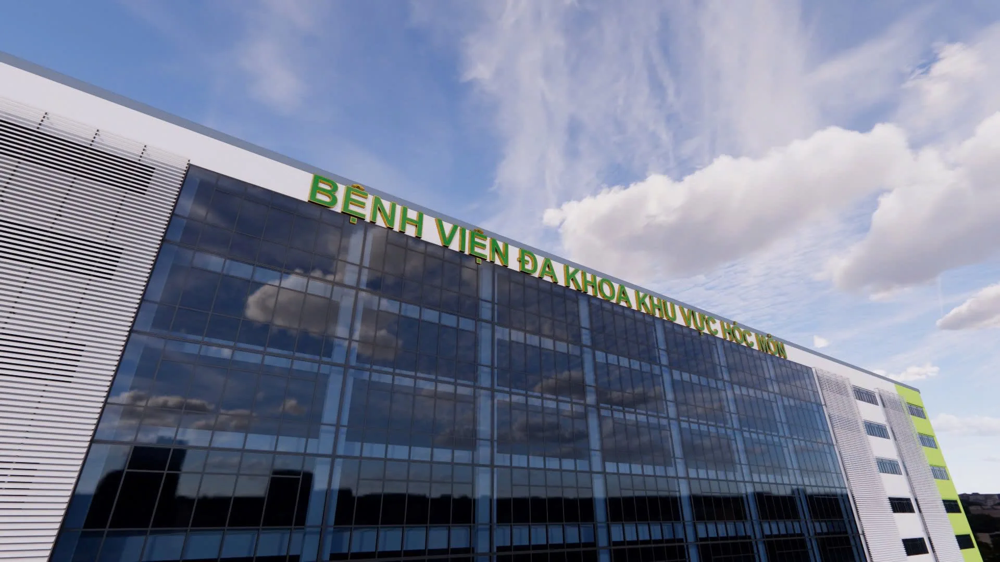
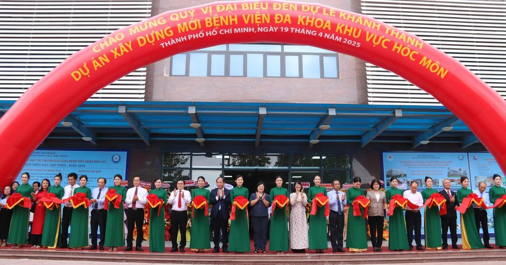
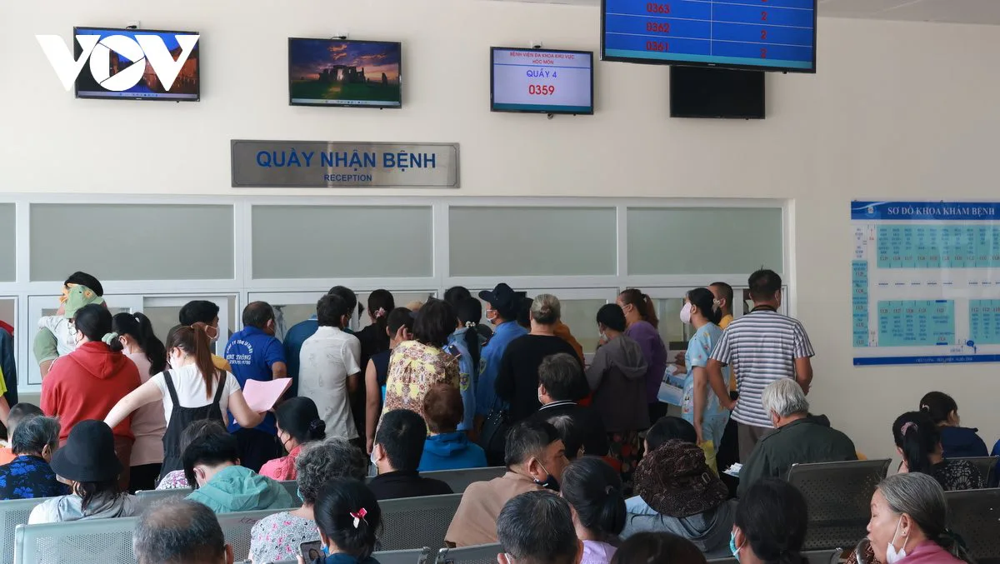
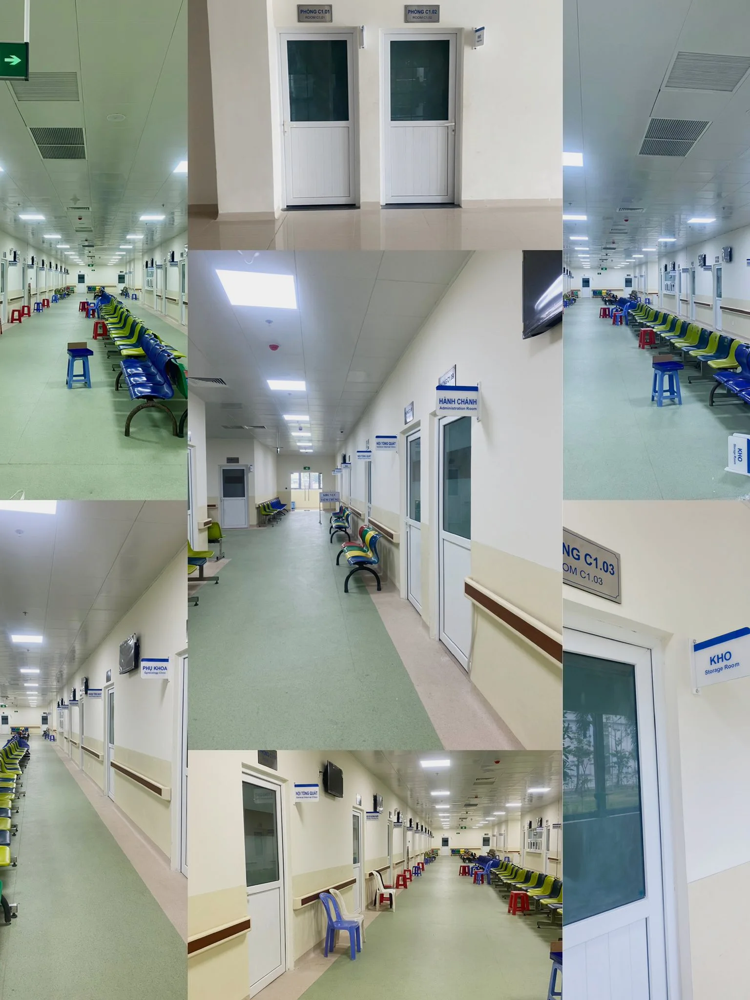
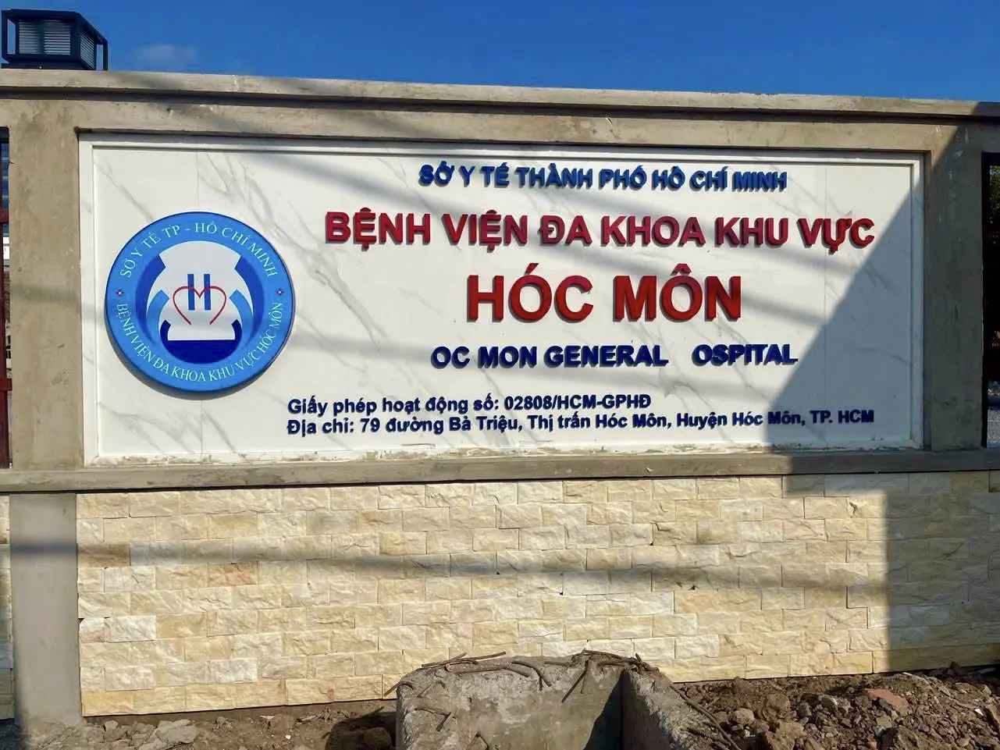

TRƯỚC ĐÂY
Kênh thông tin đã vận hành ổn định
- Tin tức, thông báo và hoạt động chuyên môn
- Đăng ký khám bệnh và tra cứu thông tin
- Kho nội dung được tích lũy qua nhiều năm
Định hướng xây dựng cổng thông tin số tương xứng với cơ sở mới, năng lực chuyên môn và vai trò phục vụ khu vực Tây Bắc Thành phố.

Tìm thông tin nhanh, dễ sử dụng và thuận tiện trên mọi thiết bị.
Nâng cao hình ảnh, truyền thông chính thống và giới thiệu năng lực chuyên môn.
Chuẩn hóa nội dung, phân quyền rõ ràng và hỗ trợ quy trình biên tập.
Sẵn sàng mở rộng dịch vụ và kết nối các hệ thống nghiệp vụ khi cần.
Triển khai theo mức ưu tiên và nhu cầu thực tế của bệnh viện.
Cổng thông tin có thể kết nối khi cần nhưng không can thiệp hay thay thế các hệ thống này.
Bước tiếp theo là nhìn nhận khách quan những gì đang có, xác định khoảng cách so với nhu cầu mới và lựa chọn các cơ hội cải thiện phù hợp.
Bệnh viện Đa khoa Khu vực Hóc Môn đã được đầu tư cơ sở mới hiện đại, phục vụ người dân Hóc Môn và các khu vực lân cận. Cổng thông tin cần trở thành một phần đồng bộ của diện mạo và năng lực phục vụ mới.

Cơ sở mới chính thức khánh thành ngày 19/4/2025.Trải nghiệm tốt bắt đầu trước khi người dân bước vào bệnh viện.
Chọn ngày, giờ và khoa khám; biết rõ lưu ý trước khi đến.
Nội thận, Nhi, Nội thần kinh, Tim mạch – Lão học, Phụ sản và các chuyên khoa khác.
Hồ sơ cần chuẩn bị, quy trình, vị trí khu khám và đường đi trong bệnh viện.
Cấp cứu 24/24, hỗ trợ, địa chỉ và thông báo mới nhất từ bệnh viện.



Đã hỗ trợ đăng ký khám bệnh, đăng ký khám theo yêu cầu và tra cứu thông tin bệnh nhân.
Duy trì tin tức, thông báo, quy chế, hoạt động chuyên môn, công tác xã hội và tuyển dụng.
Lưu trữ hướng dẫn chẩn đoán, quy trình kỹ thuật, thông tin dược phẩm và giá dịch vụ.
Dữ liệu và kinh nghiệm vận hành nhiều năm là tài sản quan trọng cho lần nâng cấp.
Đưa đăng ký khám bệnh và khám theo yêu cầu thành hành động chính trên trang chủ.
Chuẩn hóa tên khoa, dịch vụ và hướng dẫn để người dân chọn đúng nơi khám.
Giúp người dân tìm khu tiếp nhận, phòng khám, xét nghiệm và các khu chức năng.
Tách rõ tin bệnh viện, thông báo người bệnh, đấu thầu, tuyển dụng và chuyên môn.
Hiển thị rõ số cấp cứu 24/24, số hỗ trợ và địa chỉ 79 Bà Triệu.
Kế thừa đăng ký khám và mở rộng tra cứu, thông báo lịch hẹn theo từng giai đoạn.
Không phải thay đổi vì hệ thống cũ không còn giá trị, mà để những giá trị đã có tiếp tục phục vụ tốt hơn trong bối cảnh mới.
Cổng thông tin mới được định hướng như một điểm tiếp xúc số thống nhất: dễ tìm, dễ hiểu, dễ sử dụng và có khả năng mở rộng theo lộ trình chuyển đổi số của bệnh viện.
Tổ chức nội dung theo việc người dân cần làm, không theo cấu trúc nội bộ.
Hướng dẫn khám, chuyên khoa, bác sĩ và liên hệ luôn dễ nhìn thấy.
Trải nghiệm rõ ràng và thuận tiện từ điện thoại đến màn hình lớn.
Bảo toàn dữ liệu, quy trình tốt hiện có và bổ sung dịch vụ theo từng giai đoạn.
Hướng dẫn khám, chuyên khoa, bác sĩ, dịch vụ, tin tức và liên hệ.
Phân quyền khoa/phòng, kiểm duyệt, lịch xuất bản và quản lý tài nguyên số.
Sẵn sàng kết nối đặt lịch, tra cứu và các hệ thống nghiệp vụ khi có nhu cầu.
Đăng ký khám, tìm chuyên khoa và tiếp cận hướng dẫn cần thiết trong vài thao tác.
Thông tin tổng quan, dịch vụ, hướng dẫn khám và đội ngũ bác sĩ được trình bày trên cùng một hành trình.
Nội Tim mạch – Lão học
Quy trình đề xuất chia thành các bước ngắn: chọn chuyên khoa, ngày khám, thời gian và thông tin liên hệ.
Quy trình biên tập, gửi duyệt và xuất bản giúp nội dung luôn đúng đầu mối, nhất quán và có trách nhiệm.
Nội dung được cập nhật đúng hạn theo kế hoạch.
Các chỉ số tập trung vào mức độ sử dụng, hiệu quả phục vụ và tình trạng phối hợp giữa các đơn vị.
Khả năng kết nối được triển khai theo từng nhu cầu cụ thể, có kiểm soát quyền truy cập và dữ liệu trao đổi.
Thanh tác vụ nhanhĐặt lịch, tìm bác sĩ, chuyên khoa, hotline
Hướng dẫn khám rõ ràngQuy trình, giờ khám, giấy tờ cần thiết
Nội dung được ưu tiênTin nổi bật, thông báo quan trọng, chuyên môn
Thông tin rõ ràng • Tiếp cận thuận tiện • Dịch vụ tin cậy
Tìm kiếm trên Google
Đọc nhiều chuyên mục khác nhau
Gọi điện để xác nhận
Đến bệnh viện và hỏi lại
Chọn nhu cầu khám
Nhận hướng dẫn phù hợp
Chọn chuyên khoa hoặc bác sĩ
Đặt lịch và nhận xác nhận
Chuyên khoa, bác sĩ, dịch vụ, quy trình và lịch khám.
Giới thiệu, cơ cấu, năng lực, thành tựu và hoạt động nổi bật.
Tin chuyên môn, tuyển dụng, đấu thầu, công khai và truyền thông.
Đặt lịch, hỏi đáp, góp ý, liên hệ và khảo sát hài lòng.
Album, video, tài liệu, văn bản và nội dung truyền thông đa phương tiện.
Phân quyền, phê duyệt, lịch xuất bản, phiên bản và nhật ký thao tác.
Thông tin phục vụ người dân trước khi đến khám
Bác sĩ chuyên khoa II • Lĩnh vực chuyên môn nổi bật
Theo tên, chuyên khoa, lĩnh vực và lịch khám.
Hồ sơ được bệnh viện quản lý và cập nhật tập trung.
Người dân hiểu rõ năng lực trước khi quyết định đến khám.
Điều phối tin tức, hình ảnh, video và nội dung truyền thông toàn viện.
Chuẩn hóa thông tin chuyên môn, lịch khám, hướng dẫn và thông báo nghiệp vụ.
Cập nhật giới thiệu khoa, dịch vụ, bác sĩ và hoạt động chuyên môn.
Quản lý tuyển dụng, thông báo nhân sự và hồ sơ thông tin liên quan.
Công bố mời báo giá, đấu thầu, hồ sơ và thông tin công khai theo quy định.
Quản trị hệ thống, hỗ trợ người dùng, bảo mật và phối hợp tích hợp.
Trải nghiệm người dân, hiệu quả quản trị nội dung và khả năng mở rộng được xem là một hệ thống thống nhất.
Ưu tiên những hạng mục tạo giá trị sớm, kiểm soát phạm vi và mở rộng theo nhu cầu thực tế của bệnh viện.
Dễ tìm thông tin, giảm thời gian hỏi đáp và chủ động chuẩn bị trước khi đến khám.
Quản lý nội dung theo phạm vi được phân công, phối hợp truyền thông thuận tiện.
Một kênh thông tin chính thống, đồng bộ hình ảnh và định hướng truyền thông toàn viện.
Nền tảng mở rộng cho đặt lịch, tra cứu và kết nối các hệ thống trong tương lai.
Giao diện mới, cấu trúc thông tin, nội dung cốt lõi và quản trị tập trung.
Ưu tiên triển khaiĐặt lịch, hỏi đáp, góp ý, khảo sát và các tiện ích hỗ trợ người dân.
Mở rộng theo nhu cầuTừng bước tích hợp với các nền tảng nghiệp vụ và hệ sinh thái số của bệnh viện.
Phối hợp cùng CNTTĐề nghị thống nhất định hướng để tiếp tục khảo sát nhu cầu từng khoa/phòng và hoàn thiện phạm vi triển khai.